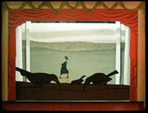
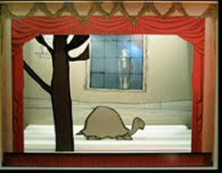

Sunday, January the 2nd, 2011
back to: title, date or indexes
We do not pay much attention to the theatrical world here at Hooting Yard, unless, that is, we have tidings to report from the Bodger's Spinney Variety Theatre. But every so often, a dramatic production so stupendous comes along that we can but gasp in awe and admiration.

Such a theatrical triumph is Entries From Reverend Gilbert White's Diary In December, performed by Miss Hathorn's Little Paper Theatre at Mustard Plaster. If there was a smidgen of sense in the world, this would transfer to the West End and pack in the punters and be showered with awards.

Readers are reminded that the Hooting Yard Christmas Special for 2009, devoted to Mrs Snooke's tortoise Timothy (pictured above), can still be listened to here.